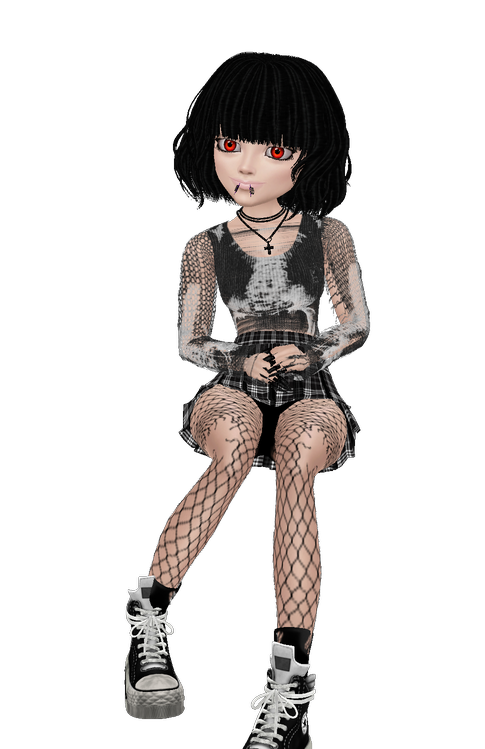

So what is this site really?
THE ANSWER: I dont really know...yet
It'll probably be some sort of blog, maybe a little personal stuff but mostly just random stuff.
Oh yeah I forgot to introduce myself:
I'm Rainy
A Gothy Computers Student addicted to mochas and pictures of Jodie Whittaker's hands.
I like long walks on the beach and beating up those dirty thieving bastards from that vintage street gang known as 'pigeons'. (they're everywhere oh god)
As you can probably tell I was inspired to do this by internet sensation xX.majin_TwEeN.Xx AKA Human Raccoon.
(I mean I literally copied her entry table and used an anime head IMVU model like hers lmao.)
So uh yeah bookmark me or I'll buy a 1000 pizzas in your name and send them to your house.
I know where you live.
The pigeons work for me.